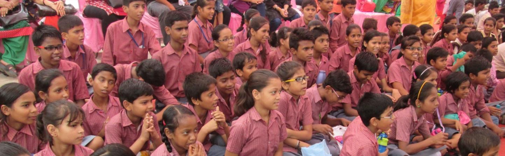

Every child has a right to be educated.
Every child has capabilities that need to be explored and channelized.
Every child dreams and yearns to learn, to make a place for himself in society.
The purpose of education is to build a platform for a child
To learn and grow
To explore and identify with himself / herself
To become a self aware individual with ability to make his / her own 'right' decisions in all facets of life.
To become aware of his / her surroundings (family, friends, community and the world at large)
To continue learning and identify a career path of his / her interest area through which
he / she can sustain himself and his / her family
To enjoy the whole process and experience of learning.
History
Vidya & Child started sixteen years ago, in July 1998, with five-year old Tumpa as the first child. Today, she is a confident and sincere child pursuing graduation in Fine Arts from New Delhi.
The commitment of Vidya & Child to diligently follow a process-driven, child-centric approach has brought about many such success stories. Our children are pursuing varied courses like CA; Engineering from NIT ( Trichy and Rourkela ) Hotel Management; Event Management, Business Administration; Cosmetology from VLCC Institute; 3D Animation; GNIIT from NIIT and many more. We also have amongst us several children who are pursuing their chosen fields along with a job in order to support their families. In addition to academic achievers, some children have also trained to become excellent tabla players and Kathak dancers through our Arts & Performing Arts Programme.
With the aim of making a difference in the lives of underprivileged children, Vidya & Child continues to support children who belong to socio-economically marginalized sections of the society. Majority of them have parents who are illiterate/semi-literate and work as domestic servants, industrial workers, rickshaw-pullers, street vendors, plumbers and carpenters.
It has been our constant endeavour to broaden our reach and provide education, encouragement and unstinting support to more and more such sections of the society. Today, we work across 6 different communities through our various centres, with a staff of over 120 people reaching out to more than 1500 children.
Vidya & Child received further recognition and appreciation when we were approached by our long term donor Tech Mahindra Foundation to replicate our work in the government schools. As a start, the Arise Lab School Project was commenced in 2013-14. Under this project, we are working with an EDMC (East Delhi Municipal Corporation) School in technical partnership with Tech Mahindra Foundation.
Across our centres, there are over 280 children who have been mainstreamed into formal schools and over 50 children have finished Class XII and are all pursuing higher studies.
Outreach & Presence

Vidya & Child believes in working from within the community. All our project centres are located in the basti or village from where we work. This helps us stay connected with the people we work for i.e. the children, their parents and their families as well as their neighbourhood. It also allows us to understand and appreciate the day-to-day struggles and the hardships faced by these families. Vidya & Child works with over 1500 children across 6 locations through its various centres..
PROJECT CENTRE
PROGRAMMES
CHILDREN
Ambedkar Vihar, Sector 37, Noida
School Programme
After School Support Programme
Foundation Programme
NIOS Support
342,162,85,18
Vatika, Sector 110, Noida
School Programme
After School Support Programme
Foundation Programme
Vidya & Child is a project managed by Jayaprakash Narayan Memorial Trust registered as a Public Charitable Trust in New Delhi, India. The trust is registered u/s 12A and 80G of the Income Tax Act. People, who believe in his ideals and the work that he did, have constituted the Trust in his memory. Sri Jayaprakash Narayan was one of the greatest political thinkers of Modern India. He was involved deeply in the independence struggle under the leadership of Mahatma Gandhi and his entire life was devoted to ushering in a new socio-political order, which would bring both freedom and equality to all. The Trust’s objective is towards undertaking development work for the underprivileged, who do not have access to basic amenities like drinking water, health and sanitation facilities and education facilities for children.
Our Board of Trustees
Vidya & Child is run by Jayaprakash Narayan Memorial Trust, which comprises 8 trustees. Members of the trust come from diverse professional and personal backgrounds, but they all share their compassion for the underprivileged child.
The Trustees
1) Dr Bimal Prasad; an eminent historian and former ambassador to Nepal
2) Mr P.P.Verma; Engineer from IIT Kharagpur and Stanford University, an entrepreneur and nephew of Sri Jayaprakash Narayan
3) Ms Supriya Akhaury; Chartered Accountant, Director at Vidya & Child
4) Ms Deviani Chatterjee; Over 20 years of teaching experience, Programme Director at Vidya & Child
5) Mr Mohan Kumar; Corporate Executive, Engineer and MBA from IIM Bangalore
6) Ms Ruchi Shah; Engineer and MBA, Associate Director at Vidya & Child
7) Ms Kakul Gupta; trained teacher, Associate Director at Vidya & Child
8) Mr Toshak Vaid; Entrepreneur, Engineer MBA from IIM Bangalore
Legal Status
Registered as a Public Charitable Trust -:Registered u/s 12 A of IT Act as a Charitable Institution -:80G IT exemption available to Individual Donors -:Registered under FCRA
Our Team
Our team is extremely diverse in nature and hence has resulted into a great learning environment which truly benefits the children and families that we work with. The diversity is seen and felt in all aspects - very young talented people working shoulder to shoulder with extremely experienced people, academicians, creative professionals, people from corporate sector, people from development sector, people from different parts of the country speaking different languages and having diverse backgrounds.. This kind of diversity is what has made us learn from and grow with each other.
Vidya & Child believes that the dynamic nature of the work we do can only be sustained and improved upon when experienced shoulders are flanked by fresh young minds. This can be practically seen when a 75 year old retired academic professional works alongside a 25 year old teacher on a daily basis, when a 21 year old Kathak student supports her Kathak Guru in conducting Kathak classes so on and so forth.
We have been further blessed due to the fact that many people have continued to be with Vidya & Child for many years in a row. We celebrate this fact every year in our Annual Meet by felicitating every person who completes 5 years. It humbles us each day to see the belief that people have shown in the philosophy, vision and ways of working of the Organization.
We are also proud to have amongst us some of the children who studied with Vidya & Child right from their primary years and are now working with us after completing class XII. They continue to pursue their education through different institutes along with their job.